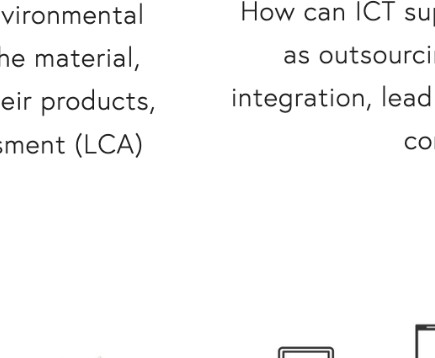
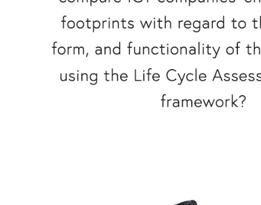
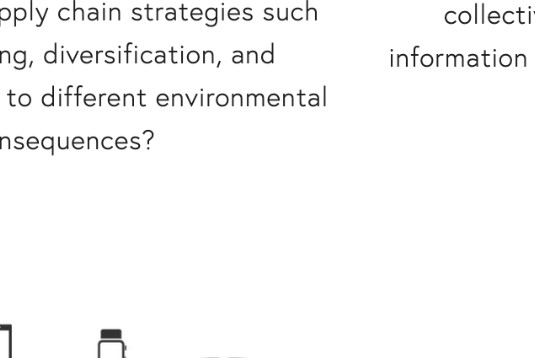
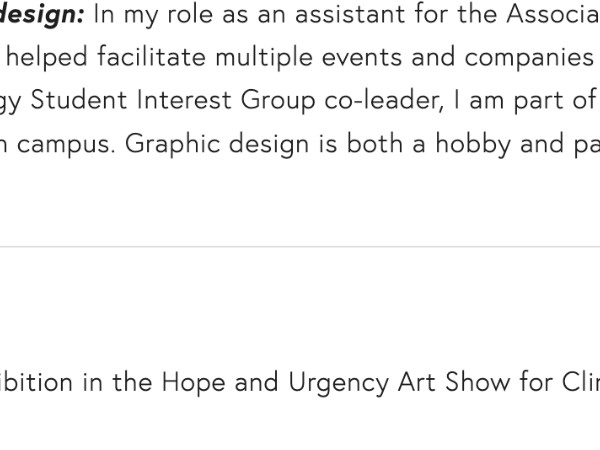
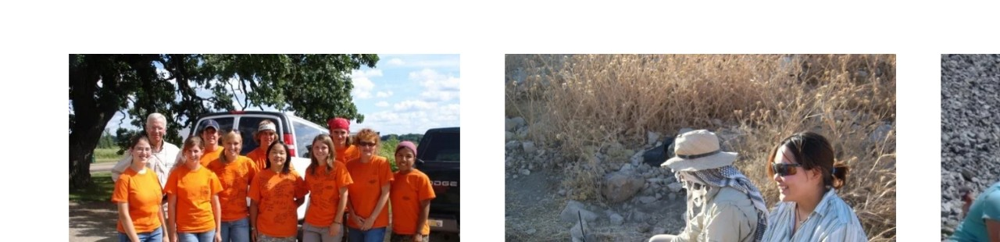

Responsible AI
Methods to identify and mitigate risks in sustainability-focused generative AI systems.
I study how AI, digital products, and technology supply chains interact with the environment—and develop practical methods for making them more responsible.
My work focuses on the decisions that shape the environmental footprint of AI, digital products, and global technology supply chains.

Methods to identify and mitigate risks in sustainability-focused generative AI systems.

Frameworks for connecting digital behavior with infrastructure, resource use, and climate impacts.

Life cycle assessment for electronics, semiconductors, circularity, and supply-chain decarbonization.
A decision-oriented approach to testing, evaluating, and mitigating risks in enterprise sustainability applications.
A framework connecting everyday digital activity with production systems, resource use, and emissions.
A user-centered method for comparing multifunctional technology products based on the services they provide.



I am a senior sustainability scientist at Amazon Lab126. My work sits at the intersection of consumer technology, supply chains, life cycle assessment, and responsible AI.
I earned my PhD from Stanford’s Emmett Interdisciplinary Program in Environment and Resources. My background also includes environmental engineering, industrial ecology, and conservation fieldwork.